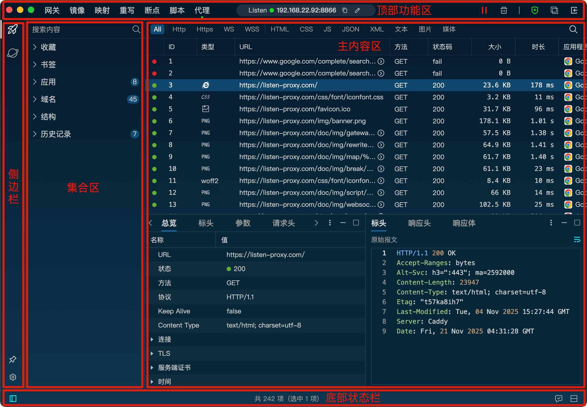
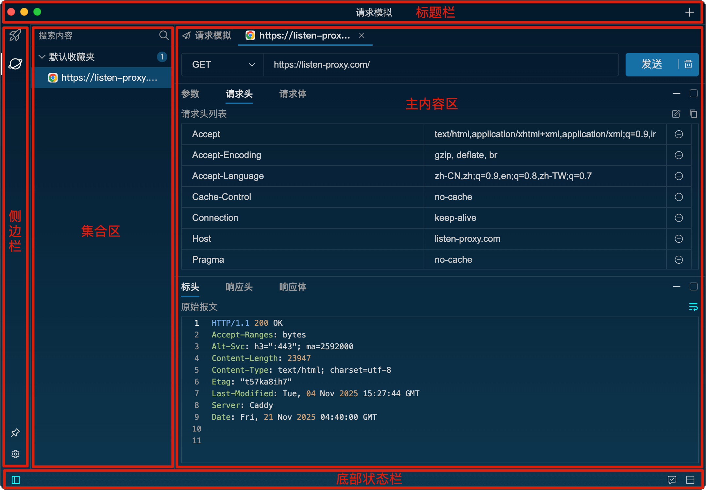

功能布局
请求代理界面布局
顶部功能区主要包含了所有代理设置相关的功能按钮，包括网关、镜像、映射、重写、脚本、断点功能的启停以及规则编辑。
另外还包括置顶按钮、对比工具按钮、SSL证书安装按钮、代理启停按钮。
侧边栏用来切换不同的功能界面（请求代理/请求模拟）。
集合区用来统计当前捕获的请求，包括域名、URL的树状结构。另外添加的请求书签和收藏以及历史记录都在这里展示。
主内容区展示了当前捕获的所有请求，双击请求可以查看请求的详细信息。
底部状态栏左边包含了集合的开启/关闭按钮，右边按钮用来切换布局方式（横向/垂直）。

请求模拟界面布局
标题栏右侧包含另一个增加按钮，点击可以新增一个请求tab页。
侧边栏用来切换不同的功能界面（请求代理/请求模拟）。
集合区用来展示保存好的模拟请求。
主内容区用来编辑请求和展示响应数据。
底部状态栏左边包含了集合的开启/关闭按钮，右边按钮用来切换布局方式（横向/垂直）
